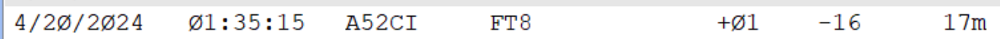
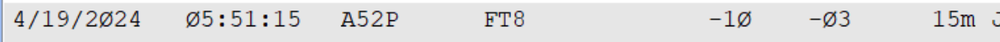

Note that there are TWO calls you want to track; a52ci and a52p (or a52*). I presume they are in two locations requiring two calls or each op is required to have a call... a small complication for alerts and spotting.
LOG THE CALL OF THE STATION YOU WORK. Which means YOU
have to LISTEN, no rhyme or
reason here in which call is used. Great ops but no information
posted (band plan, rigs, antennas) on their web page either (we're
in the dark).
It appears that their antenna is essentially omni, working both EU and AS at the same time (180 deg apart, with meager reports so they're not hearing anything loud).
Here is what I've been able to (BARELY) accomplish (in North Idaho), so far since they clearly are not (can't be?) showing a lot of effort outside of EU/AS so far...


Both were short path at full legal output, into 4 elements (~11 dBi gain) at 60' with the receiver narrowed down to boost their audio with less noise. Both took over an hour each.
The solar slap yesterday created havoc too, a LOT of distortion
in play; REALLY dodgy copy.
They are NOT simple to work from NA and I was frankly, louder in
nearby India and China so I presume the EU/JA hordes are THAT loud
and/or they have a noise issue on site/s.
I'm not whining, but it's not easy to work them. I only have one
previous confirmation from Bhutan so I'm pleased so far.
I wish you good hunting,
Rick nk7i
The only time a window is open to west coast appears to be between 7-8 pm PDT when A52 is only working Asia and Europe
Bob ad6hf